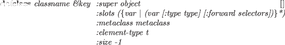

-
- クラスを生成または再定義する。
異なったスーパークラスやスロットを持つクラスに再定義したとき、
メソッドが新しいスロット配置を仮定するため、
以前のクラスを継承する古いオブジェクトは予想できない振舞いをする。
defmethod classname {(selector lambda-list . body)}* [特殊]
-
-
classnameの1つ以上のメソッドを定義する。
それぞれのselectorは、キーワードsymbolでなければならない。
defclassmethod classname {(selector lambda-list . body)}* [マクロ]
-
-
classp object [関数]
-
- objectがクラスオブジェクトのときTを返す。
そのオブジェクトは、クラスmetaclassかそのサブクラスの
インスタンスである。
subclassp class super [関数]
-
-
classがsuperのサブクラスであることを検査する。
vector-class-p x [関数]
-
-
xが、vector-classのインスタンスであるとき、Tを返す。
delete-method class method-name [関数]
-
-
method-nameのメソッド定義をclassから除く。
class-hierarchy class [関数]
-
-
classの下の継承構造を表示する。
system:list-all-classes [関数]
-
-
今まで定義されたクラスを全てリストアップする。
system:find-method object selector [関数]
-
-
selectorに記述されたメソッドをobjectのクラスおよび
そのスーパークラスの中から見つける。
objectが、selectorに応じることができるかどうかを
知るために使用される。
system:method-cache &optional flag [関数]
-
-
メソッドキャッシュのヒット率を調査し、
ヒットとミスの2つの数値のリストを返す。
もしflagがNILのとき、メソッドキャッシュは無効になる。
もしnon-NILのflagが与えられたとき、メソッドキャッシュは初期化され
キャッシュ可能になる。
2016-03-23